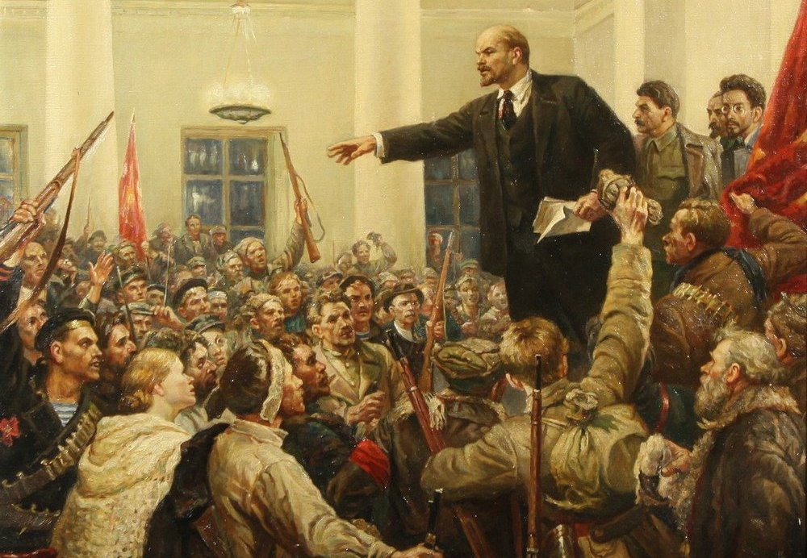

Karl Marx
Marxism uses a materialist methodology, referred to by Marx and Engels as the materialist conception of history and later better known as historical materialism, to analyse the underlying causes of societal development and change from the perspective of the collective ways in which humans make their living.Marx's account of the theory is in The German Ideology (1845)and in the preface A Contribution to the Critique of Political Economy (1859).All constituent features of a society (social classes, political pyramid and ideologies) are assumed to stem from economic activity, forming what is considered as the base and superstructure. The base and superstructure metaphor describes the totality of social relations by which humans produce and re-produce their social existence. According to Marx, the "sum total of the forces of production accessible to men determines the condition of society" and forms a society's economic base.
The base includes the material forces of production such as the labour, means of production and relations of production, i.e. the social and political arrangements that regulate production and distribution. From this base rises a superstructure of legal and political "forms of social consciousness" that derive from the economic base that conditions both the superstructure and the dominant ideology of a society. Conflicts between the development of material productive forces and the relations of production provokes social revolutions, whereby changes to the economic base leads to the social transformation of the superstructure
his relationship is reflexive, in that the base initially gives rise to the superstructure and remains the foundation of a form of social organization. Those newly formed social organizations can then act again upon both parts of the base and superstructure so that rather than being static, the relationship is dialectic, expressed and driven by conflicts and contradictions. Engels clarified: "The history of all hitherto existing society is the history of class struggles. Freeman and slave, patrician and plebeian, lord and serf, guild-master and journeyman, in a word, oppressor and oppressed, stood in constant opposition to one another, carried on uninterrupted, now hidden, now open fight, a fight that each time ended, either in a revolutionary reconstitution of society at large, or in the common ruin of the contending classes."
Libertarian Marxism emphasizes the anti-authoritarian and libertarian aspects of Marxism. Early currents of libertarian Marxism such as left communism emerged in opposition to Marxism–Leninism.
Libertarian Marxism is often critical of reformist positions such as those held by social democrats. Libertarian Marxist currents often draw from Karl Marx and Friedrich Engels' later works, specifically the Grundrisse and The Civil War in France; emphasizing the Marxist belief in the ability of the working class to forge its own destiny without the need for a vanguard party to mediate or aid its liberation.Along with anarchism, libertarian Marxism is one of the main currents of libertarian socialism.
Libertarian Marxism includes currents such as autonomism, council communism, De Leonism, Lettrism, parts of the New Left, Situationism, Socialisme ou Barbarie and workerism.Libertarian Marxism has often had a strong influence on both post-left and social anarchists. Notable theorists of libertarian Marxism have included Maurice Brinton, Cornelius Castoriadis, Guy Debord, Raya Dunayevskaya, Daniel Guérin, C. L. R. James, Rosa Luxemburg, Antonio Negri, Anton Pannekoek, Fredy Perlman, Ernesto Screpanti, E. P. Thompson, Raoul Vaneigem, and Yanis Varoufakis,the latter claiming that Marx himself was a libertarian Marxist.
Marxist humanism was born in 1932 with the publication of Marx's Economic and Philosophic Manuscripts of 1844 and reached a degree of prominence in the 1950s and 1960s. Marxist humanists contend that there is continuity between the early philosophical writings of Marx, in which he develops his theory of alienation, and the structural description of capitalist society found in his later works such as Capital.They hold that it is necessary to grasp Marx's philosophical foundations to understand his later works properly.
Contrary to the official dialectical materialism of the Soviet Union and to interpretations of Marx rooted in the structural Marxism of Louis Althusser, Marxist humanists argue that Marx's work was an extension or transcendence of enlightenment humanism.Where other Marxist philosophies see Marxism as a natural science, Marxist humanism reaffirms the doctrine of "man is the measure of all things" – that humans are essentially different to the rest of the natural order and should be treated so by Marxist theory.
According to a 2007 survey of American professors by Neil Gross and Solon Simmons, 17.6% of social science professors and 5.0% of humanities professors identify as Marxists, while between 0 and 2% of professors in all other disciplines identify as Marxists.
Xi Jinping, General Secretary of the Communist Party of China since 2012
With the October Revolution in 1917 the Bolsheviks took power from the Russian Provisional Government. The Bolsheviks established the first socialist state based on the ideas of soviet democracy and Leninism. Their newly formed federal state promised to end Russian involvement in World War I and establish a revolutionary worker's state. Following the October Revolution the Soviet government was involved in a struggle with the White Movement and several independence movements in the Russian Civil War. This period is marked by the establishment of many socialist policies and the development of new socialist ideas mainly in the form of Marxism–Leninism.
the October Revolution of the Soviet Union
In 1919, the nascent Soviet Government established the Communist Academy and the Marx–Engels–Lenin Institute for doctrinal Marxist study as well as to publish official ideological and research documents for the Russian Communist Party. With Lenin's death in 1924, there was an internal struggle in the Soviet Communist movement, mainly between Joseph Stalin and Leon Trotsky in the form of the Right Opposition and Left Opposition respectively. These struggles were based on both sides different interpretations of Marxist and Leninist theory based on the situation of the Soviet Union at the time.
At the end of the Second Sino-Japanese War and more widely World War II, the Chinese Communist Revolution took place within the context of the Chinese Civil War. The Chinese Communist Party, which was founded in 1921, was in conflict with the Kuomintang over the future of the country. Throughout the Civil War Mao Zedong developed a theory of Marxism for the Chinese historical context. Mao found a large base of support in the peasantry as opposed to the Russian Revolution which found its primary support in the urban centers of the Russian Empire. Some major ideas contributed by Mao were the ideas of New Democracy, mass line and people's war. The People's Republic of China (PRC) was declared in 1949. The new socialist state was to be founded on the ideas of Marx, Engels, Lenin and Stalin.
From Stalin's death until the late 1960s, there was increasing conflict between China and the Soviet Union. De-Stalinization, which first began under Nikita Khrushchev and the policy of detente, were seen as revisionist and insufficiently Marxist. This ideological confrontation spilled into a wider global crisis centered around which nation was to lead the international socialist movement.
Following Mao's death and the ascendancy of Deng Xiaoping, Maoism and official Marxism in China was reworked. This new model was to be a newer dynamic form of Marxism–Leninism and Maoism in China. Commonly referred to as socialism with Chinese Characteristics this new path was centered around Deng's Four Cardinal Principles which sought to uphold the central role of the Chinese Communist Party and uphold the principle that China was in the primary stage of socialism and that it was still working to build a communist society based on Marxist principles.